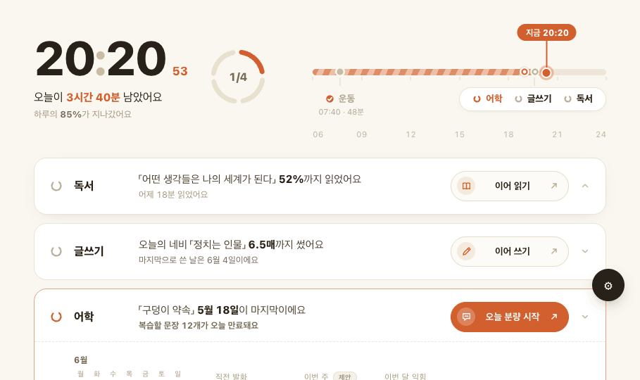

작업지시서 · cue 활동 카드 정보 재설계 · 2026.06 · v9 (정보구조 통일안)
cue 활동 카드 정보 재설계 — 구현 작업지시서
독서·글쓰기·어학·운동 네 장의 활동 카드(접힘+펼침)와 전체 통계 화면을, 오늘 도구를 실제로 열게 만드는 정보로 재설계한다. 이 문서는 무엇을 넣고/빼고/어떻게 배치할지와 실제 DB 필드 매핑·카피 규칙·근거를 담는다. 동작 시안은 동봉된 시안/큐 대시보드 — 정보 재설계.html을 브라우저에서 열어 확인한다(트윅 ⚙로 시각·목표 슬롯·애니메이션 토글).
리포지토리github.com/leftjap/apps · 작업 대상은 cue/. 이 문서의 데이터 필드는 모두 실제 코드(테이블·컬럼·라벨맵)를 확인해 표기했다 — 검증 출처는 각 절에 명시.
0. 범위와 산출물
1. 설계 원칙 (정보구조 통일)
2. 공통 카드 골격
3. 카드별 명세 (독서·글쓰기·어학·운동)
4. 전체 통계
5. 카피 규칙
6. 디자인 토큰·정렬·색
7. 데이터 계약 (DB 매핑)
8. 근거 (재검증)
9. 구현 체크리스트 · 미결정
0범위와 산출물
구분
내용
대상
활동 행 ×4 (접힘+펼침), 전체 통계 카드
제외
히어로(시계·하루 고리·오늘 흐름 타임라인) — 손대지 않는다. 시안엔 맥락용으로만 포함
바꾸는 코드
cue/src/data/copy.js(문장 생성 — 교체), cue/src/data/adapter.js(필드 계산 — 보강), cue/src/components/AppRow.jsx·StatsView.jsx(렌더), cue/src/styles/cue.css(정렬·색)
한 줄 목적
끝없는 누적·끊긴 기록을 빼고, 직전에 하던 것 → 오늘 이어서 → 가까운 목표로 재배치해 재개 충동을 만든다

시안 1 — 메인. 히어로(범위 밖) 아래 활동 행 4개. 첫 행(독서) 기본 펼침. 어학은 ‘지금 할 일(due)’로 포인트색 강조.
1설계 원칙 (정보구조 통일)
네 카드가 같은 골격으로 읽힌다. 펼침의 기록 3종을 직전(최근 한 일) → 이번 주(근접목표) → 추세(이번 달/진척)의 동일한 역할로 정렬한다. 라벨·타이포·진행막대·보조줄이 카드마다 같은 자리에 온다.
시간 단위는 일 → 주 → 월. 연간 누적은 카드에서 빼고 전체 통계로 보낸다.
직전 환기(이어보기)를 슬롯 1에. “끝낸 누적”이 아니라 “하다 만 것”을 보여 재개를 유도한다(8절 근거).
근접목표를 슬롯 2에. “이번 주 N / 목표 M”처럼 가까운 목표를 현재/목표 한 쌍으로 보인다.
색은 한 곳에만. 포인트색(#D2602F)은 시간·지금 할 일·경신 가능 지점에만. 한 화면에서 세 군데 이상 동시 강조 금지.
빈 격려·죄책감 어법 금지. 모든 문장은 DB에서 온 구체값. 공백은 사실로, 복귀는 문턱을 낮춰서(5절).
2공통 카드 골격
2-1. 접힘 행
고리마크완료=닫힌 원+체크 / due=포인트색 회전 / 대기=열린 고리
이름독서·글쓰기·어학·운동 (순서 고정)
hook재개 지점 1줄 — 구체 명사 + 굵은 수치 (예: 「제목」 52%까지 읽었어요)
sub보조 사실 1줄 — 직전 시점, 공백 사실, 또는 ‘지금 할 일’ 당김
CTA전 행 동일 폭 pill. 라벨은 데이터 그대로(이어 읽기/이어 쓰기/오늘 분량 시작/운동 기록 열기·보기)
2-2. 펼침 (통일 4행 정렬)
좌측 이번 달 캘린더 히트맵(유지) + 우측 기록 3종. 기록 3종은 라벨 · 값 · 진행막대 · 보조줄 4행을 grid subgrid로 묶어, 칸이 달라도 네 줄이 같은 baseline에 정렬되게 한다(과거: 가운데 칸 막대 때문에 보조줄이 어긋났음 → 해결).
슬롯 1 · 직전최근 한 일 (직전 읽기 분 / 직전 글 매수 / 직전 발화 문장 / 직전 운동 부위)
슬롯 2 · 이번 주현재 / 목표 (예: 3 / 5일) + 진행막대. 근접목표
슬롯 3 · 추세이번 달 또는 진척, 이전 대비 (예: 14회 · 지난달 12회)
beat“오늘 [최소 행동]이면 [가까운 결과] — [기준]” 한 줄
3카드별 명세
3-1. 독서 (read)
데이터 출처: book_reading_seconds(밀리의서재 로컬, 외부 트래커가 채움) · 진도 %(EPUB라 쪽수 불가, %만) · 마지막 읽은 시각. 읽은 분은 macOS 스크린타임 근사.
hook — 책 제목 + 진도%. 예: 「어떤 생각들은 나의 세계가 된다」 52%까지 읽었어요
sub — 직전에 읽은 시점. 예: 어제 18분 읽었어요
직전 읽기18분 · 어제
이번 주3 / 5일 + 막대 · 지난주 4일 목표=제안값
책 진척52% · 지난주 41% (책 완독을 향한 진행률)
빼기 올해 누적 시간(→통계) · 0일 최장연속 병치.
3-2. 글쓰기 (write)
데이터 출처: today_entries — kind(카테고리) · title · content(글자수→매수, 200자=1매) · created_at. 한 row = 한 편. 카테고리 라벨 고정(검증: today/src/features/spotlight.js KIND_TO_LABEL) — navi=오늘의 네비, fiction=단편, blog=블로그, memo=메모.
hook — 카테고리 + 「제목」 + 매수(직전 글을 이어쓰게). 예: 오늘의 네비 「정치는 인물」 6.5매까지 썼어요 가짜 ‘6월 에세이’ 금지
기록 3종은 .recs { display:grid; grid-auto-flow:column; grid-template-rows:repeat(4,auto); } + 각 기록 .rec { grid-template-rows:subgrid; grid-row:span 4 }로 라벨·값·막대·보조줄을 칸 간 같은 줄에 맞춘다. 막대 없는 칸은 3행을 빈 셀로 두어 보조줄 baseline을 유지. (모바일 ≤920px는 flex 2열 폴백.)
색 절제 규칙
진행막대: 채운 칸=뉴트럴 #C9BCA1, 오늘 닿을 수 있는 다음 칸 1개만 포인트색(“경신 가능 지점”). 나머지 빈 칸 #ECE4D3.
제안/목표 칩: 제안값(독서·글쓰기·어학)은 무채색 “제안” 칩 + 값의 “/ 목표” 부분을 흐리게. 실제 목표(운동)는 칩 없이 “4 / 4회”.
★ 신기록 배지: 운동 직전 세션에 PR이 있을 때만 포인트색(강한 동기 신호라 허용).
한 펼침에서 동시 강조는 due(있으면) + 막대 다음칸 + beat 정도로 제한. 히트맵은 데이터 시각화라 별도.
7데이터 계약 (DB 매핑)
슬롯
독서
글쓰기
어학
운동
hook
책 제목 + 진도%
kind 라벨 + 「title」 + 매수
sceneTitle + 마지막일
오늘 시각·tags(부위)·분
sub
직전 읽은 시점
마지막 쓴 날
복습 대기 수(next_review≤오늘)
이번 주 N회 / 목표
슬롯1
직전 분
직전 글 매수
직전 발화 수(+신규)
부위 2개 + ★PR
슬롯2
이번 주 활동 일수 / 목표(운동만 실제값 4, 나머지 제안). 진행막대.
슬롯3
책 진척%·지난주
이번 달 매수·지난달
이번 달 익힌 문장·지난달
이번 달 횟수·지난달
매수 = content 글자수 / 200, 소수 1자리(sheetsFromHtml 참조).
주간 활동 일수 = 해당 주 활동이 있던 날 수(빈도). 8주 막대도 동일 정의.
복습 대기 = study_review_queue where next_review ≤ today.
부위 = session.tags(대표 2개; 3개 이상이면 볼륨 큰 2개로 제한할지 9절 확인). PR = blocks[].sets[].pr true 개수.
연간 누적·최장은 전체 통계에서만 계산.
주의 — 주간 목표 실제 ‘목표’가 설정된 건 운동(주 4일)뿐. 독서 5일·글쓰기 3편·어학 4일은 이 문서의 제안값이다. 디자인엔 슬롯·“제안” 칩만 두고, 사용자가 확정하기 전엔 수치를 진짜 목표로 쓰지 말 것.
8근거 (재검증)
작업지시서 인용 연구를 코드와 별개로 직접 재확인한 결과:
판단
근거
결론
끊긴 최장연속 병치 제거
Silverman & Barasch, On or Off Track, JCR 2023 (7개 연구)
끊긴 연속을 강조하면 이후 참여가 줄고, 유지된 연속은 늘린다 → 0일 상태에서 과거 최고 병치 금지. 연속은 살아있을 때만 노출.
‘이어보기’ 슬롯의 근거
Zeigarnik·Ovsiankina 메타분석, Nature HSSC 2025
미완료 과제의 ‘기억 우위(자이가르닉)’는 재현 실패 → 근거로 쓰지 않음. 그러나 ‘재개 경향(오브시안키나)’은 신뢰할 만함 → 직전 환기·SRS 복습 대기의 토대.
어학 SRS·복습 대기
SRS(Anki·Memrise 등) 통설
잊을 때쯤 다시 보게 하는 복습 대기는 재개 동기가 강함. 포인트·배지는 브랜드 원칙상 배제하고 진행막대·복습 대기·수집 성장으로 대체.
글쓰기 최소 분량·매수 목표
글쓰기 습관 연구·실무 통설
매수 목표는 구체·측정가능·비판단적이라 동기를 유발. ‘오늘 한 매’ 최소 행동은 죄책감 없이 습관을 유지 → beat/hook에 반영.